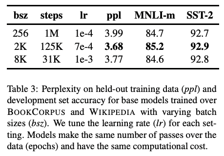

RoBERTa的变化
RoBERTa的变化
原文：RoBERTa: A Robustly Optimized BERT Pretraining Approach
年份：2019
引用：7874
:star: 它在模型层面没有改变Google的Bert，改变的只是预训练的方法。
更大的mini-batch
原本的BERT-base的batch size是256，训练了1M个steps。而RoBERTa的batch size是8k，训练31K个steps。
为什么使用更大的batch size：
有钱
在机器翻译中，用更大的batch size配合更大学习率能提升模型优化速率和模型性能（Past work in Neural Machine Translation has shown that training with very large mini-batches can both improve optimization speed and end-task performance when the learning rate is increased appropriately）
实验证明

更多的数据，更长时间的训练
借鉴XLNet（126G）用了比BERT（13G）多10倍的数据，RoBERTa（160G）也用了更多的数据。性能确实再次彪升。
动态Mask
在BERT中有两个训练目标，分别是MLM（masked language modeling）和NSP（next sentence prediction），其中动态Mask就是针对MLM任务的改进。
Masked Language Model (MLM)：随机的输入序列中的token示例如下：选择并替换为特殊token[MASK]。在预测被masked的tokens时，MLM的目标函数是交叉熵损失函数。
BERT中的MASK策略是：随机选择15%的token，这15%将要被masked的token并不会真的全部替换为[MASK]，而是从这些token中：
- 随机选择80%，替换成[MASK]
- 随机选择10%，替换成随机token
- 随机选择10%，不改变原token
但是BERT的MASK是在训练之前的预处理阶段就做完的，这15%的token一旦被选择就不会再改变，也就是说从一开始随机选择了这15%的token，之后的N个epoch里都不再改变了。这就叫做静态Masking。
而RoBERTa的处理方法是，一开始把预训练数据复制10份，每一份分别进行15%token的mask，所以同一句话会有10种不同的mask方式，然后每份数据都训练N/100个epoch。可以理解为在训练的N个epoch中，每个序列都是变化的，所以叫动态Masking。
去除NSP训练任务
在NSP任务中，BERT模型会接收两个句子，A和B，作为输入，并输出一个二元分类结果，表示这两个句子是否是相邻的。在训练的数据中，50%的B是A的下一个句子，50%的B是随机抽取的。
理论上，这个任务有助于模型学习句子之间的关系和语义。但是一些研究质疑了NSP loss 的必要性。为此，RoBERTa比较了四种训练方式：
- SEGMENT-PAIR+NSP：这种训练形式是BERT中的默认形式，带有NSP loss。每个输入都是一对段，每个段可以包含多个自然句子，然后被连接在一起，中间插入了一个特殊标记[SEP]来分隔两个段落。
- SENTENCE-PAIR+NSP：这种训练形式和SEGMENT-PAIR+NSP类似，但是每个输入都包含一对自然句子，可以从一个文档的连续部分采样，也可以从另一个文档中采样单独的文件。
- FULL-SENTENCES：每个输入都包含从一个或多个文档中连续采样的完整句子，输入可能会跨越文档边界。当我们到达一个文档的末尾时，我们开始从下一个文档中抽取句子，并在文档之间添加一个额外的分隔符标记。移除了NSP loss。
- DOC-SENTENCES：输入的结构类似于FULL-SENTENCES，只是它们不能跨越文档边界。移除了NSP loss。
关于NSP的缺点（Chat老师回答）： NSP任务要求模型预测两个输入句子是否相邻。为了完成这个任务，BERT模型在每个输入序列的开头插入了一个特殊的标记[CLS]，并将两个输入句子通过特殊的[SEP]标记隔开。BERT模型只需关注[CLS]标记对应的输出向量，而不需要关注其他token的向量。这是因为[CLS]标记的向量可以看作是整个序列的汇总表示，包含了序列中所有token的信息。 然而，这种做法可能会导致BERT模型在处理长句子时表现不佳。因为在长句子中，[CLS]标记对应的向量只包含了部分信息，无法完全捕捉整个句子的语义。
特殊BPE设置
Radford在GPT2里提出了一种更巧妙的BPE实现版本byte-level text encoding，该方法使用bytes作为基础的子词单元，这样便把词汇表的大小控制到了5w。同时，与传统的word-level BPE不同，byte-level BPE是在字节级别上操作的，这意味着它可以处理任意语言和字符集，而不仅仅是拉丁字母表中的字符。
之前的一些实验结果表明，这两种文本编码的实验性能区别不大，可能Radford BPE Encoding在某些任务上的终端性能略微差点，但是RoBerta作者坚信通用的编码模式比性能上的轻微损失更重要，所以在实验中采用了byte-level text encoding。